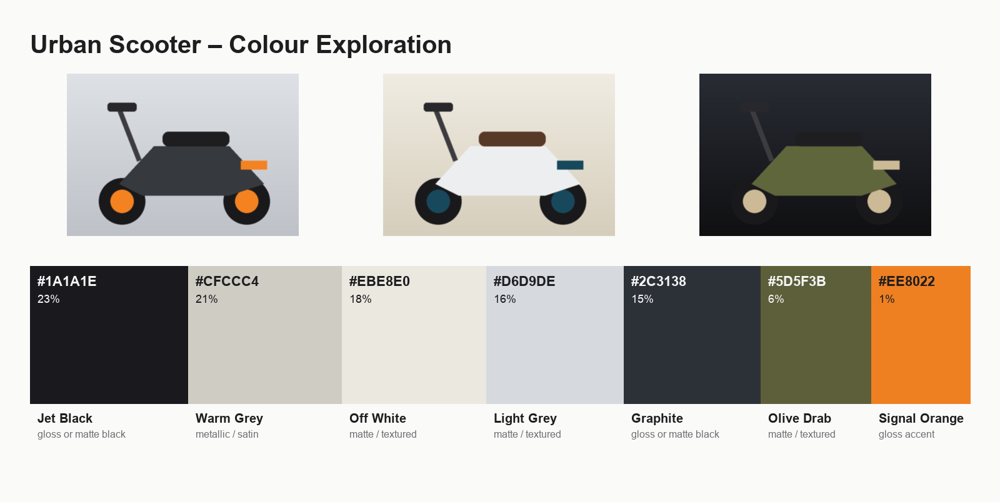

CMF · Colour
CMF Palette Studio
Friction
Building a colourway starts with eyedropping dozens of reference photos by hand and retyping hex codes into a deck.
Tool
- Drop in reference photos and get a merged, named colour board in seconds
- Hex codes, palette share, CMF-style names and a finish hint for each swatch
- Small accent colours are never dropped from the board
- Exports PNG for Slack, PDF for print and JSON for reuse in other tools
Pythonk-means clusteringPillowGradio